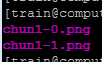
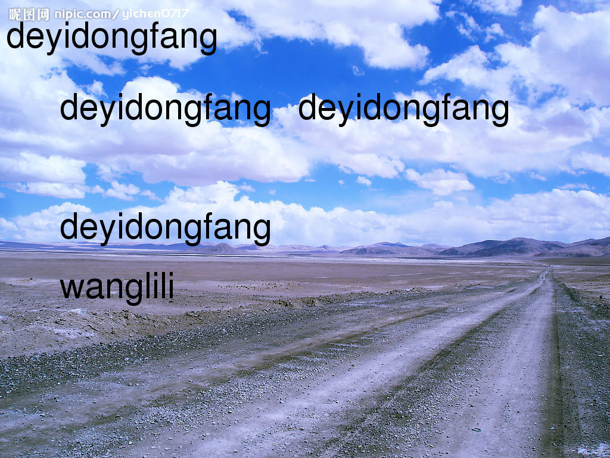

linux图片处理工具之convert：
1.格式转换
2.在图片上加文字
3.查看图片属性
4.改变图像的大小（以下两个命令理解不是很清楚）
5.旋转图像
6.截图
7.拼图
8.图片上画长方形；
9.给图片加边框
10.使图像边缘有3D效果，-raise是向下凹
11.形成与其左右对称的照片
12.反色形成底片
13.加噪声，对图像虚化处理
14 使图片有油画效果
15 把图片变为黑白颜色
16 将图片变为灰色，试了其它颜色都不可以，只有灰色可以
17 散射毛玻璃效果
18 把图片扭转，形成漩涡的效果
19 对图片模糊处理
20.去掉100x100像素之外的图片
21.将多张图片转化为gif图片（最好是大小相等的图片）
22.将多张图片转化为gif图片（大小不一样的图片，使用layers选项，会把大的图片切一部分，但是就不是原图了）
23.图片以波浪线的形式改变，必须是axb的形式
24.锐化图像，使图像的轮廓线变得清晰
25.反向照片
26.降低了图片所占内存,但是降低了图片的质量，质量值为0-100之间的数值,数字越大,质量越好,一般指定70-80,基本上看不出前后的差别
27.implode后面必须接数，数的不同，效果不同，内爆效果
28.曝光，模拟胶片曝光
29.创建一个空白文档
30.颜色数：设定图片采用的颜色数(颜色数也就是色彩数，就是屏幕上最多显示多少种颜色的总数)
31.边框颜色
1.格式转换：
单个文件：convert chun.jpg(inputfile) chun.png(outputfile)
多个文件：convert chun.jpg xia.jpg chun1.png

会出现两个文件分别为：
chun1-0(对应chun.jpg转化后的图片)
chun1-1（对应xia.jpg转化后的图片）
批量转化(不会覆盖原文件)
find /share/nas26/train/wanglil/test_picture/jpg -name "*.jpg" -exec convert {} {}.gif \;
特别说明：
-exec参数可以对查询文件进行进一步操作，后面跟的是命令，命令的终止以；判定，{}表示文件名（find过滤出来的文件）
出现错误：find: missing argument to `-exec'
两个坑：第一\和gif之间必须要有空格 第二\和；之间没有空格
-exec 空格 命令 空格 {} 空格\;
可以将多张图片转化为pdf格式(从此不用花钱扫描啦)
convert tu1 tu2 tu3 tu.pdf
将pdf转化为图片
convert convert.pdf convert.jpg
出来的结果是（有几张pdf对应几张jpg）

- 在图片上加文字，进行版权说明(1024 768 宽 高)
convert -draw 'text 100,400 "deyidongfang"' -fill black -pointsize 60 -font helvetica chun4.jpg chun5.jpg
-fill:填充用的颜色
-pointsize：加注字体大小，像素数；
-font：字体
-draw 对图像进行注释，后面接string；以图片左上角为原点坐标的移动到位置 10, 50，然后绘制出双引号中的文本。使用单引号是因为如果需要绘制多个字，则绘图命令中需要使用双引号，不能在双引号中再用双引号。

convert -draw 'text 100,400 "deyidongfang" text 100 500 "wanglili"' -fill black -pointsize 60 -font helvetica chun4.jpg chun5.jpg

加公司的logo
convert qiu.jpg deyidongfang.png -gravity southeast -geometry +50+60 -composite qiu1.jpg
-gravity 将log放到qiu.jpg的右下角
-geometry ：logo的下边缘距qiu.jpg50像素、右边缘60像素（图像的位置，改为-号即是左，上）
-composite：合成图像

- 查看图片属性
identify picture

获得某个图片的宽
identify chun2.jpg|cut -d ' ' -f 3|cut -d 'x' -f 1
注意：’’之间是空格；即’空格键’
- 改变图像的大小（以下两个命令理解不是很清楚）
convert -resize 2650x1920 chun.jpg chun1.jpg （改变像素大小）
默认时，宽度和高度表示要最终需要转换图像的最大尺寸，同时Convert会控制图片的宽和高，保证图片按比例进行缩放。
如：convert -resize 600×600 src.jpg dst.jpg
转换后的dst.jpg的图片大小(宽度为600，而高度已经按比例调整为450)
2.如果需要转换成600×600，而图片无需保持原有比例，可以在宽高后面加上一个感叹号!.
如：convert -resize 600×600! src.jpg dst.jpg
3. 只指定高度，图片会转换成指定的高度值，而宽度会按原始图片比例进行转换。
如：convert -resize 400 src.jpg dst.jpg
转换后的dst.jpg的图片大小(宽度为400，而高度已经按比例调整为300)，和例1有点类似。
convert -sample 50%x50% chun.jpg chun1.jpg（改变图片大小，在同样清晰度的情况下，像素也会相应的缩小一半）
- 旋转图像
convert -rotate 90 chun.jpg chun1.jpg（顺时针旋转90度）
- 截图
convert chun.jpg -crop 1024x688+10+95 chun1.jpg
convert inputfile -crop wxh+dx+dy outfile
w为要截取图片的宽
h为要截取图片的高
dx，dy是开始截取的偏移位置，以左上角为原点

- 拼图
横向拼接：convert chun.jpg xia.jpg qiu.jpg dong.jpg +append siji.jpg

纵向拼接：convert chun.jpg xia.jpg qiu.jpg dong.jpg -append siji1.jpg

8.图片上画长方形；
convert chun.jpg -fill none -stroke green -strokewidth 3 -draw 'rectangle 20,20 200,200' chun1.jpg

-stroke 描边用的颜色
- 给图片加边框
convert -bordercolor blue -border 5x10 chun.jpg chun1.jpg

10 convert -raise 60x60 chun.jpg chun1.jpg
使图像边缘有3D效果，-raise是向下凹

convert +raise 60x60 chun.jpg chun1.jpg
使图像边缘有3D效果，-raise是向上凸

11.convert -flop qiu.jpg qiu1.jpg（形成与其左右对称的照片）


convert -flip qiu.jpg qiu1.jpg（形成与其上下对称的照片）

12 convert -negate qiu.jpg qiu1.jpg（反色形成底片）

13.convert -noise 10 qiu.jpg qiu1.jpg（加噪声，对图像虚化处理）

14 convert -paint 10 qiu.jpg qiu1.jpg（使图片有油画效果）

15 convert -monochrome qiu.jpg qiu1.jpg（把图片变为黑白颜色）

16 convert qiu.jpg -colorspace gray qiu1.jpg （将图片变为灰色，试了其它颜色都不可以，只有灰色可以）
convert qiu.jpg -separate qiu1.jpg （该命令直接是将图片转化为灰色，不用指定颜????

16 convert -charcoal 4 qiu.jpg qiu1.jpg （形成铅笔画的效果）

17 convert -spread 10 qiu.jpg qiu1.jpg（散射毛玻璃效果）
-spread 是每个像素随机移动的位移大小

18 convert -swirl 70 qiu.jpg qiu1.jpg（把图片扭转，形成漩涡的效果）

19 convert -blur 200x3 qiu.jpg qiu1.jpg（对图片模糊处理）

20.convert -chop 100x100 qiu.jpg qiu1.jpg（去掉100x100像素之外的图片）

- 将多张图片转化为gif图片（最好是大小相等的图片）
convert a.jpg a.gif
convert b.jpg b.gif
convert -delay 20 a.gif b.gif -loop 0 c.gif
-loop n 播放n轮, 0表示不断地重复播放
-delay n 每张图片间隔（每帧）间隔多少毫秒
- 将多张图片转化为gif图片（大小不一样的图片，使用layers选项，会把大的图片切一部分????????????????????
convert -delay 20 a.gif qiu.jpg -loop 0 -layers Optimize d.gif
22 convert -transpose a.jpg a1.jpg（向左旋转90度）


convert -transverse a.jpg a1.jpg（向右旋转90度）

- convert -wave 5x5 qiu.jpg qiu1.jpg（图片以波浪线的形式改变，必须是axb的形式）

convert -wave 50x50 qiu.jpg qiu1.jpg

24 convert -unsharp 100x100 qiu.jpg qiu2.jpg（锐化图像，使图像的轮廓线变得清晰）

25 convert -reverse chun.jpg b.jpg b1_1.jpg（生成b1_1-1（对应b.jpg）,b1_1-2?????chun.jpg?????
26 convert qiu.jpg -quality 80 qiu1.jpg
convert的-quality降低了图片所占内存,但是降低了图片的质量，质量值为0-100之间的数值,数字越大,质量越好,一般指定70-80,基本上看不出前后的差别
27 convert chun.jpg -implode 1 chun1.jpg（implode后面必须接数，数的不同，效果不同，内爆效果）

28 convert -solarize 42 qiu.jpg qiu1.jpg（曝光，模拟胶片曝光）

29.创建一个空白文档
convert -size 800x600 xc:"#ddddff" new.jpg
30 convert -colors 1 qiu.jpg qiu1.jpg
-colors 颜色数：设定图片采用的颜色数
(颜色数也就是色彩数，就是屏幕上最多显示多少种颜色的总数)

31 convert -mattecolor "#DA70D6" -frame 60x60 qiu.jpg qiu1.jpg
mattecolor:边框颜色